Activités scientifiques
Cette partie recense mes travaux et publications ainsi que les financements obtenus ou pour lesquels j’ai été ou suis impliqué en tant qu’enseignant-chercheur. Afin de proposer une focale complémentaire aux indicateurs, je joins également une perspective plus narrative concernant mon positionnement sur ces aspects du travail académique. Les étudiants directement ou indirectement encadrés sont soulignés.
Activité de publications
Articles publiés dans des revues indexées, d’audience internationale
- Frajerman, A., Chevance, A., Chaumette, B., & Morvan, Y. (2023). Prevalence and factors associated with depression and suicidal ideation among French students in 2016 : A national study. Psychiatry Research, 326, 115263. https://doi.org/10.1016/j.psychres.2023.115263
- Frajerman, A., Chaumette, B., Krebs, M.-O., Morvan, Y. (2022). Mental health in medical, dental and pharmacy students : A cross-sectional study. Journal of Affective Disorders Reports, 10, 100404. https://doi.org/10.1016/j.jadr.2022.100404
- Charvet, C., Boutron, I., Morvan, Y., Le Berre, C., Touboul, S., Gaillard, R., Fried, E., Chevance, A. (2022). How to measure mental pain : A systematic review assessing measures of mental pain. Evidence Based Mental Health, ebmental-2021-300350. https://doi.org/10.1136/ebmental-2021-300350
- Rolland, F., Hadouiri, N., Haas-Jordache, A., Gouy, E., Mathieu, L., Goulard, A., Morvan, Y., Frajerman, A. (2022). Mental health and working conditions among French medical students : A nationwide study. Journal of Affective Disorders, 306, 124‑130. https://doi.org/10.1016/j.jad.2022.03.00
- Morvan, Y., Fried, E. I., Chevance, A. (2020). Network modeling in psychopathology : Hopes and challenges. L’Encephale, 46(1). https://doi.org/10.1016/j.encep.2020.01.001
- Amado, I., Moualla, M., Jouve, J., Brénugat-Herné, L., Attali, D., Willard, D., Rigaut, B., Malangin, B., Kern, L., Meyniel, C., Gaillard, R., Plaze, M., Perquier, F., Morvan, Y. (2020). Employment, Studies and Feelings : Two to Nine Years After a Personalized Program of Cognitive Remediation in Psychiatric Patients. Frontiers in Psychiatry, 11. https://doi.org/10.3389/fpsyt.2020.00609
- Chevance, A. M., Daouda, O. S., Salvador, A., Légeron, P., Morvan, Y., Saporta, G., Hocine, M. N., Gaillard, R. (2020). Work-related psychosocial risk factors and psychiatric disorders : A cross-sectional study in the French working population. PLOS ONE, 15(5), e0233472. https://doi.org/10.1371/journal.pone.0233472
- Kern, L., Morvan, Y., Mattar, L., Molina, E., Tailhardat, L., Peguet, A., De Tournemire, R., Hirot, F., Rizk, M., Godart, N., Fautrelle, L. (2020). Development and evaluation of an adapted physical activity program in anorexia nervosa inpatients : A pilot study. European Eating Disorders Review: The Journal of the Eating Disorders Association, 28(6), 687‑700. https://doi.org/10.1002/erv.2779
- Frajerman, A., Morvan, Y., Krebs, M.-O., Gorwood, P., Chaumette, B. (2019). Review / Meta-analyses Burnout in medical students before residency: A systematic review and meta-analysis. European Psychiatry, 55, 36–42. https://doi.org/10.1016/j.eurpsy.2018.08.006
- Romo, L., Ladner, J., Kotbagi, G., Morvan, Y., Saleh, D., Tavolacci, M. P., Kern, L. (2018). Attention-deficit hyperactivity disorder and addictions (substance and behavioral): Prevalence and characteristics in a multicenter study in France. Journal of Behavioral Addictions, 7(3), 743–751. https://doi.org/10.1556/2006.7.2018.58
- Lopez-Fernandez, et al. (2018). Measurement Invariance of the Short Version of the Problematic Mobile Phone Use Questionnaire (PMPUQ-SV) across Eight Languages. International Journal of Environmental Research and Public Health, 15(6), 1213. https://doi.org/10.3390/ijerph15061213
- Bourdier, L., Morvan, Y., Kotbagi, G., Kern, L., Romo, L., Berthoz, S. (2017). Examination of emotion-induced changes in eating: A latent profile analysis of the Emotional Appetite Questionnaire. Appetite. https://doi.org/10.1016/j.appet.2017.11.108
- Kotbagi, G., Morvan, Y., Romo, L., Kern, L. (2017). Which dimensions of impulsivity are related to problematic practice of physical exercise? Journal of Behavioral Addictions, 6(2), 221-228. https://doi.org/10.1556/2006.6.2017.024
- Lopez-Fernandez et al. (2017). Self-reported dependence on mobile phones in young adults: A European cross-cultural empirical survey. Journal of Behavioral Addictions, 1-10. https://doi.org/10.1556/2006.6.2017.020
- Bourdier, L., Lalanne, C., Morvan, Y., Kern, L., Romo, L., Berthoz, S. (2017). Validation and Factor Structure of the French-language version of the Emotional Appetite Questionnaire (EMAQ). Frontiers in Psychology, 8(442). https://doi.org/10.3389/fpsyg.2017.00442
- Chaumette, B., Kebir, O., Mam-Lam-Fook, C., Morvan, Y., Bourgin, J., Godsil, B. P., Plaze, M., Gaillard, R., Jay, T. M., Krebs, M. O. (2016). Salivary cortisol in early psychosis: New findings and meta-analysis. Psychoneuroendocrinology, 63, 262-270. https://doi.org/10.1016/j.psyneuen.2015.10.007
- Pillet, B. & Morvan, Y., Todd, A., Franck, N., Duboc, C., Grosz, A., Launay, C., Demily, C., Gaillard, R., Krebs, M. O., Amado, I. (2015). Cognitive remediation therapy (CRT) benefits more to patients with schizophrenia with low initial memory performances. Disability and Rehabilitation, 37(10), 846-853. https://doi.org/10.3109/09638288.2014.946153 (co-premier auteur)
- Terrien, S., Stefaniak, N., Morvan, Y., Besche-Richard, C. (2015). Factor structure of the French version of the Hypomanic Personality Scale (HPS) in non-clinical young adults. Comprehensive Psychiatry, 62, 105-113. https://doi.org/10.1016/j.comppsych.2015.07.001
- Krebs, M. O., Morvan, Y., Jay, T., Gaillard, R., Kebir, O. (2014). Psychotomimetic effects at initiation of cannabis use are associated with cannabinoid receptor 1 (CNR1) variants in healthy students. Molecular Psychiatry, 19(4), 402-403. https://doi.org/10.1038/mp.2013.188
- Magaud, E., Morvan, Y., Rampazzo, A., Alexandre, C., Willard, D., Gaillard, R., Kazes, M., Krebs, M. O. (2014). Subjects at Ultra High Risk for psychosis have ‘heterogeneous’ intellectual functioning profile: a multiple-case study. Schizophrenia Reseach, 152(2-3), 415-420. https://doi.org/10.1016/j.schres.2013.11.002
- Terrien, S., Stefaniak, N., Blondel, M., Mouras, H., Morvan, Y., Besche-Richard, C. (2014). Theory of mind and hypomanic traits in general population. Psychiatry Research, 215(3), 694-699. https://doi.org/10.1016/j.psychres.2013.12.042
- Morvan, Y., Tibaoui, F., Bourdel, M. C., Loo, H., Akiskal, K. K., Akiskal, H. S., Krebs, M. O. (2011). Confirmation of the factorial structure of temperamental autoquestionnaire TEMPS-A in non-clinical young adults and relation to current state of anxiety, depression and to schizotypal traits. Journal of Affective Disorders, 131(1-3), 37-44. https://doi.org/10.1016/j.jad.2011.01.008
Articles publiés dans des revues indexées, d’audience nationale
- Morvan, Y., Frajerman, A. (2021). La santé mentale des étudiants : Mieux prendre la mesure et considérer les enjeux. L’Encéphale. https://doi.org/10.1016/j.encep.2020.10.009
- Lejuste, F., Pedron, L., Bonnard, E., Urban, M., Morvan, Y., Urben, S., Gaillard, R., Conus, P., Krebs, M.-O. (2021). Validation d’une version française du 16-items Prodromal Questionnaire (fPQ16) chez des adolescents et jeunes adultes consultant en psychiatrie. L’Encéphale, 47(6), 547-553. https://doi.org/10.1016/j.encep.2020.11.009
- Carre, A., Shankland, R., Flaudias, V., Morvan, Y., Lamboy, B. (2021). Les psychologues dans le champ de la santé mentale : Les perspectives en promotion de la santé mentale positive. Pratiques Psychologiques, 27(1), 71‑84. https://doi.org/10.1016/j.prps.2018.11.00
- Moualla, M., Danset-Alexandre, C., Launay, C., Doyen, C., Willard, D., Morvan, Y., Amado, I. (2018). Accessibilité de la remédiation cognitive en Île-de-France, en psychiatrie adulte et infanto-juvénile, et dispositifs de réhabilitation. Annales Medico-Psychologiques, 176, 613–619. https://doi.org/10.1016/j.amp.2018.04.003
- Oppetit, A., Brébant, C., Monchablon, D., Bourgin, J., Gaillard, R., Olié, J.-P., Krebs, M.-O., Morvan, Y. (2018). Détection précoce des troubles psychiques en milieu scolaire : Le dispositif Fil Harmonie. L’Encéphale, 44(3), 232‑238. https://doi.org/10.1016/j.encep.2017.01.00
- Valladier, E., Willard, D., Romo, L., Hodé, Y., Morvan, Y. (2018). La dépression chez les proches de patients souffrant de schizophrénie : Effets longitudinaux sur 8 mois du programme ProFamille. L’Encéphale, 44(2), 128‑133. https://doi.org/10.1016/j.encep.2016.11.00
- Krebs, M. O., Magaud, E., Willard, D., Elkhazen, C., Chauchot, F., Gut, A., Morvan, Y., Bourdel, M. C., Kazes, M. (2014). Évaluation des états mentaux à risque de transition psychotique : validation de la version française de la CAARMS. L’Encéphale, 40(6), 447-456. https://doi.org/10.1016/j.encep.2013.12.003
- Briffault, X., Morvan, Y., Roscoät, E. d. (2010). Les campagnes nationales d’information sur la dépression. Une anthropologie biopsychosociale ? L’Encéphale, 36(Supplement 2), D124-D132. https://doi.org/10.1016/j.encep.2009.05.005
- Briffault, X., Morvan, Y., Rouillon, F., Dardennes, R., Lamboy, B. (2010). Facteurs associés à l’adéquation des traitements de l’épisode dépressif majeur en France. L’Encéphale, 36(Supplement 2), D59-D72. https://doi.org/10.1016/j.encep.2008.10.012
- Briffault, X., Morvan, Y., Rouillon, F., Dardennes, R., Lamboy, B. (2010). Recours aux soins et adéquation des traitements de l’épisode dépressif majeur en France. L’Encéphale, 36, (Supplement 2), D48-D58. https://doi.org/10.1016/j.encep.2008.10.011
- Morvan, Y., Rouvier, J., Olié, J. P., Lôo, H., Krebs, M. O. (2009). Consommation de substances illicites chez les étudiants : une enquête en service de médecine préventive. L’Encéphale, (Supplement 6), S202-S208. https://doi.org/10.1016/S0013-7006(09)73471-2
- Mouaffak, F., Morvan, Y., Bannour, S., Chayet, M., Bourdel, M. C., Thepaut, G., Kazes, M., Guelfi, J. D., Millet, B., Olié, J. P., Krebs, M. O. (2009). Validation de la version française de l’échelle abrégée d’appréciation psychiatrique étendue avec ancrage, BPRS-E(A). L’Encéphale, 36(4), 294-301. https://doi.org/10.1016/j.encep.2009.04.003
Articles dans des revues non indexées
- Morvan, Y., Frajerman, A., Kern, L., Chaumette, B. (2019). Santé psychique, mal-être, dépression et anxiété des étudiants : Des chiffres et des humains? Revue québécoise de psychologie, 40(2), 5‑24. https://doi.org/10.7202/1065901ar
- Morvan, Y., Le Nevé, Y., Charlet, J., Aimé, X., Krebs, M. O., Olié, J. P. (2017). Quelle idée ! Les big data, aussi en psychiatrie. Le quotidien du médecin, 9627, 9.
- Dadi, G., Morvan, Y., Amado, I., Jay, T., Krebs, M., Dervaux, A. (2013). Usage de cannabis et fonctions cognitives : Manifestations aiguës et à long terme. Les entretiens de Bichat.
- Willard, D., Morvan, Y., Canceil, O., Calmejane, C., Dammak, A., Hodé, Y., Krebs, M., Olié, J. (2012). Profamille : un programme psychoéducatif. Le quotidien du médecin (9204), 7.
- Briffault, X., Morvan, Y., Guilbert, P., Beck, F. (2008). Evaluation de la dépression dans une enquête de santé générale. Bulletin Epidémiologique Hebdomadaire, 35-36, 318-321.
- Morvan, Y., Prieto, A., Briffault, X., Blanchet, A., Dardennes, R., Rouillon, F., Lamboy, B. (2007). La dépression touche trois millions de français. La santé de l’homme (389), 57-59.
Articles soumis
Kern, L., Mattar, L., Kotbagi, G., Romo, L., Morvan, Y. (2023). Is Problematic Physical Activity a uni or a multi-dimensional concept? A bifactor analysis of the Exercise Dependence Scale-Revised. Soumis à Psychological Assessment.
Ouvrages
- Bonneville-Roussy, A., Fenouillet, F., Morvan, Y. (2021). Introduction aux analyses par équations structurelles : Applications avec Mplus en psychologie et sciences sociales. Dunod.
- Belghith, F., Bohet, A., Morvan, Y., Regnier-Loilier, A., Tenret, E., Verley, E. (2020). La santé des étudiants. La Documentation Française.
Chapitres d’ouvrages
- Facon-Barillot, Q., Romo, L., Vansimaeys, C., Chevance, A., Frajerman, A., Morvan, Y. (2023). La santé mentale, son importance et sa mesure chez les étudiants dans les enquêtes de l’ove depuis 2016. In Être étudiant avant et pendant la crise sanitaire, Enquête Conditions de vie 2020. La Documentation française.
- Facon-Barillot, Q., Romo, L., Vansimaeys, C., Chevance, A., Frajerman, A., Morvan, Y. (2023). Quels déterminants de la santé mentale des étudiants dans l’enquête condition de vie 2020. In Être étudiant avant et pendant la crise sanitaire, Enquête Conditions de vie 2020. La Documentation française.
- Facon-Barillot, Q., Romo, L., Vansimaeys, C., Chevance, A., Frajerman, A., Morvan, Y. (2023). Le recours aux soins des étudiants : quelques indicateurs à partir des enquêtes de l’ove depuis 2016. In Être étudiant avant et pendant la crise sanitaire, Enquête Conditions de vie 2020. La Documentation française.
- Morvan, Y., Chaumette, B. (2020). La dépression et le suicide chez les étudiants d’université. In La santé des étudiants. La Documentation Française.
- Mignon, D., Morvan, Y. (2020). Le recours aux soins des étudiants souffrant de dépression en 2016. In La santé des étudiants. La Documentation Française.
- Gierski, F., Morvan, Y. (2020). La consommation d’alcool, de cannabis et de dopants cognitifs chez les étudiants. In La santé des étudiants. La Documentation Française.
- Morvan, Y., Chaumette, B., Romo, L., Kern, L., Krebs, M. (2019). De quoi parlons-nous lorsque l’on s’intéresse au mal être des étudiants ? In Regards croisés sur les expériences étudiantes. L’enquête conditions de vie 2016. La Documentation française.
- Morvan, Y. (2018). The powers of fiction over cognition. In Combining Aesthetic and Psychological Approaches to TV Series Addiction. Cambridge Scholars Publishing.
- Morvan, Y., Coulange, I., Krebs, M. O., Boujut, E., Romo, L. (2016). La santé mentale des étudiants dans l’enquête CdV-2013. In Les mondes étudiants. La Documentation Française.
- Dervaux, A., Morvan, Y., Laqueille, X., Krebs, M.-O. (2014). Les effets néfastes du cannabis, un facteur de risque à l’adolescence ? In L’addiction chez les adolescents (pp. 93-126). De Boeck.
- Morvan, Y., Prieto, A., Briffault, X., Blanchet, A., Dardennes, R., Rouillon, F., Lamboy, B. (2007). La dépression en France : Prévalence, facteurs associés et consommation de soins. In Baromètre Santé des Français 2005. Inpes.
Conférences Invités
- Morvan, Y. (2023, octobre 23). Science Ouverte, par-delà la partie émergée de l’Accès Ouvert. Open Access Week. Université Paris Nanterre, Nanterre.
- Morvan, Y. (2023, juillet 11). La Santé mentale des étudiants : par delà les données. Journée d’étude annuelle de la Conférence des Écoles de journalisme : « Nouveaux enjeux de Santé Mentale dans les écoles de journalisme : comment faire face ? », Paris. https://osf.io/b8ehx/
- Morvan, Y. (2022, octobre 13). Santé mentale des étudiants : (Bien?) Observer. Les villes prennent soin de leurs étudiants. Colloque de l’AVUF, Montpellier. https://osf.io/c3ujd/
- Morvan, Y. (2022, mars 10). Les vies étudiantes, un état des lieux : La santé mentale. L’expérience étudiante. Journées nationales de l’Innovation Pédagogique dans l’Enseignement Supérieur - 5e édition, Paris. https://osf.io/na8bv/
- Morvan, Y. (2021, décembre 8). Indicateurs de santé mentale dans les enquêtes sur les conditions de vie des étudiants. Enquêter avec et sur les étudiants : 20 rendez-vous du 6 au 10 décembre – Semaine Data SHS PUDN ParisNanterre. https://osf.io/5xr4j/
- Morvan, Y. Table Ronde. (2021, octobre 27). Colloque Assemblée Nationale Enquête 2021 Santé mentale des jeunes médecins.
- Morvan, Y. (2021, juin 8). La santé mentale des étudiants. Groupe de travail IGESR : La santé mentale des étudiants.
- Morvan, Y. (2021, juin 4). Exemple d’intégration de l’open science au cursus master de psychologie clinique psychopathologie, est-ce inconscient ? Journée de la fédération EPN-R. https://doi.org/10.17605/OSF.IO/ZN5HU
- Morvan, Y. (2021, mars 25). Audition Sénat. Mission d’information sur les conditions de la vie étudiante : Table ronde consacrée à la santé psychologique des étudiants, Sénat.
- Frajerman, A., Morvan, Y. (2021, mars 23). Santé des étudiants en 2020 : Etat des lieux. 14ème édition des Journées Internationales de Pathologies Émergentes du Jeune Adulte et de l’Adolescent. Etudiants en 2020 : de la prévention à l’intervention.
- Morvan, Y. (2021, février 11). Souffrance psychique des étudiants : Évolutions, spécificités et prise en charge. Colloque Maison des Adolescents Strasbourg. Colloque Maison des Adolescents Strasbourg, Maison des Adolescents Strasbourg. https://doi.org/10.17605/OSF.IO/8A7D5
- Morvan, Y. (2020, décembre 7). Quelques exemples d’analyses incluant la variable temporelle en psychologie : Des modèles latents aux network analysis. Semaine Data SHS PUDN Paris Nanterre. https://doi.org/10.17605/OSF.IO/AWXRQ
- Morvan, Y., Mignon, D., Chaumette, B. (2019, juin 24). La sante psychique des étudiants : Quels points de vues (a l’ove) Présentation Université Dauphine. Rendez-vous de la santé étudiante. https://doi.org/10.17605/OSF.IO/2CVNU
- Morvan, Y. (2018, mai 25). La sante psychique des etudiants : Quels points de vues ? Colloque du Réseau de Soins Psychiatriques et Psychologiques Pour les Etudiants (RESPPET) : La souffrance psychique des étudiants réalités, ruptures et dépassements, Paris.
- Morvan, Y. (2018, janvier 24). Le Big-Data en Psychiatrie. 16ème Congrès de l’Encéphale, Paris.
- Morvan, Y. (2017). Penser avec (sous) la menace. 15ème Congrès de l’Encéphale.
- Morvan, Y. (2016). De Star Trek à The Leftovers en passant par De la terre à la lune, Dr House et Naruto : Les pouvoirs de la fiction sur la cognition. Colloque international Série et Dépendances Saison 2.
- Morvan, Y. (2016). N’y aurait-il pas, aussi, des effets positifs de l’immersion dans les séries et la fiction ? Colloque international Série et Dépendances.
- Morvan, Y., Le Nevé, Y. (2015). La question que l’on se pose : Ou en est le système d’information aka « les bases de données » de l’IDP ? In Assemblé Générale du Groupe de Recherche en Psychiatrie CNRS 3557.
- Krebs, M. O., Le Nevé, Y., Morvan, Y., Charlet, J. (2015). Évolution des architectures de partages de données médicales pour la Recherche Clinique au sein du GdR-Psy/IdP. In Réunion des Groupes Méthodologiques du GdR-Psy/IdP CNRS 3557.
- Morvan, Y., Bralet, M. C., Charlet, J. (2014). Synthèse base de données clinique. In 3ème séminaire du Groupe de Recherche en Psychiatrie CNRS 3557.
- Morvan, Y., Le Nevé, Y. (2013). Groupe Méthodologie, Collections de données : Quels contenants ? In 2cd séminaire du Groupe de Recherche en Psychiatrie CNRS 3557.
- Morvan, Y. (2012). Résultats d’une enquête sur la santé psychique menée en population étudiante. Académie de Médecine : prévention des risques psycho-comportementaux à l’Adolescence, Paris.
- Morvan, Y. (2012, janvier 9). Data-Management des Données en Santé Mentale. Journées de formation Projet DGRS-Inserm d’échange France-Tunisie, Hôpital Razzi, La Manouba, Tunisie.
- Morvan, Y. (2012, octobre 19). Mise en place d’une base de données clinique partagée : Passer des Data-shit aux Data-Sheet. 1er séminaire du Groupe de Recherche en Psychiatrie CNRS 3557, Tours.
- Morvan, Y. (2009, juin 8). L’évaluation de la consommation de substances des étudiants : Exemple d’un travail conjoint entre un service de médecine préventive universitaire et une unité Inserm. Journées de formation sur les addictions des services de médecine préventive universitaire de Nancy-Metz, Metz.
- Morvan, Y. (2007). L’importance d’une politique de santé à l’Université. Colloque Santé des étudiants à l’Université : quels partenariats pour quelle politique ?, Paris.
- Morvan, Y. (2007, janvier 30). Résultats de l’enquête Sommeil des Étudiants. Colloque des 20 ans du Service Inter-Universitaire de Médecine Préventive et de Promotion de la Santé, Paris.
Communications orales
- Morvan, Y. (2023, mars 26). Student mental health : Beyond the data, some questions that still need to be asked. EPA2023 Symposium COVID-19 and student mental health: findings and proposals. https://osf.io/gdfxk/ (Egalement président du symposium). Congrès de l’Association Européenne de Psychiatrie.
- Facon-Barillot, Q., Romo, L., Vansimaeys, C., Chevance, A., Frajerman, A., & Morvan, Y. (2023, janvier 18). Santé mentale et recours aux soins des étudiants : Évolution depuis 2016. 21ème Congrès de l’Encéphale. https://osf.io/5w4p2/
- Facon-Barillot, Q., Romo, L., Morvan, Y. (2022, décembre 10). Identifier les cibles d’interventions par modélisations en réseau et par simulations : Application sur la détresse psychologique des étudiants en 2021. 50ème congrès de l’AFTCC. https://osf.io/gbwtz/
- Morvan, Y., Medina-Altamirano, C., Willard, D., Jantiac, C., Chaumette, B., Krebs, M. O. (2022, janvier 19). Intérêt des systèmes complexes et du modèle computationnel mutualiste de l’intelligence dans l’analyse de la transition psychotique. 20ème Congrès de l’Encéphale. https://osf.io/rspmh/
- Frajerman, A., Chevance, A., Chaumette, B., Morvan, Y. (2020, janvier 22). Dépression et idées suicidaires chez les étudiants (médecine versus non-médecine). 18ème Congrès de l’Encéphale.
- Harauchamp, L., Magaud, E., Krebs, MO., Morvan, Y. (2019, juin 06). Corrélats cognitifs de la transition psychotique, an unexpeted journey in the psychometric universe? From bivariate shire to LCA path and ending in the network universe. Colloque Grepaco 2019.
- Moualla, M., Danset-Alexandre, C., Launay, C., Doyen, C., Willard, D., Morvan, Y., Amado, I. (2017, juin 30). Remédiation cognitive en Île de France, état des lieux en 2016 – Projets. 6ème journée du C3RP. 6ème journée du C3RP, Paris.
- Chaumette, B., Kebir, O., Mam-Lam-Fook, C., Morvan, Y., Bourgin, J., Godsil, B. P., Plaze, M., Gaillard, R., Jay, T. M., Krebs, M. O. (2016). Cortisol salivaire et transition psychotique. 14ème Congrès de l’Encéphale.
- Kotbagi, G., Romo, L., Morvan, Y., Kern, L. (2016). Understanding the problematic practice of physical exercise : Associations with quality of life, impulsivity, substance consumption and positive psychology. 3rd International Conference on Behavioral Addictions.
- Kern, L., Morvan, Y., Kotbagi, G., Romo, L. (2015). Alcool, activité physique et qualité de vie des étudiants. Colloque d’alcoologie de l’IREB.
- Kotbagi, G., Morvan, Y., Romo, L., Kern, L. (2015). Problematic practice of physical exercise and quality of life in French and Indian university students. 2nd International Conference on Behavioral Addictions.
- Getin, C., Morvan, Y., Lecendreux, M., Konofal, E., Romo, L. (2014). Parcours de soin et répercussions scolaires chez 335 enfants présentant un TDAH. 3ème colloque international de Langue Française sur le TDAH.
- Kern, L., Romo, L., Muller, I., Kotbagi, G., Krumm, C. M., Berthoz, S., Morvan, Y. (2014). Pratique Problématique à l’exercice physique, activité physique, qualité de vie, bonheur et consommations. Symposium « La santé des étudiants en question ».
- Morvan, Y. (2013, juin, 07). La santé des Étudiants : de l’épidémiologie…aux stratégies d’interventions précoces. Colloque Grepaco 2013
- Hamza, A., Abbes, Z., Ben Yahia, H., Morvan, Y., Amado, I., Tabbane, K., Bouden, A. (2013). Place de la remédiation cognitive dans la prise en charge des enfants hyperactifs. 11ème Congrès de l’Encéphale.
- Besche-Richard, C., Al Aïn, S., Carre, A., Terrien, S., Blondel, M., Morvan, Y. (2012, novembre 16). Schizotypie, Alexithymie, Anhédonie et cognition sociale en population étudiante. 27ème Congrès de l’Association Psychiatrique d’Amérique Latine. 27ème Congrès de l’Association Psychiatrique d’Amérique Latine, Buenos Aires.
- Morvan, Y., Johais, M., Bendjemaa, N., Perufel, A., Rouvier, J. (2009, janvier 22). Consommation de cannabis et effets ressentis lors des premières expositions : Résultats préliminaires d’une enquête en population étudiante. 7ème Congrès de l’Encéphale. 7ème Congrès de l’Encéphale, Paris.
- Morvan, Y., Tibaoui, F., Bourdel, M.-C., Krebs, M.-O. (2009). A scale to measure subjective effects intensity of cannabis consumption : Factorial structure confirms frequent psychotic-like experience in young adults. The 15th Biennial Winter Workshop in Psychoses, 26, e80 https://doi.org/10.1097/01.yic.0000405768.59973.0f
- Krebs, M., Canceil, O., Willard, D., Garnier, B., Vacheron, M., Petitjean, F., Mazodier, M., Loridon, L., Beaufils, B., Hardy-Bayle, M., Malapert, E., Morvan, Y., Bourdel, M. C., Spadone, C., Olié, J. P., Dervaux, A. (2006). Cannabis use in psychiatric inpatients at first admission in French specialized units. 13th Biennal WinterWorkshop on Schizophrenia Research, 81, 304‑304.
- Krebs, MO., Canceil, O., Willard, D., Garnier, B., Vacheron, MN., Petitjean, F., Mazodier, M., Loridon, L., Beaufils, B., Hardy-Baylé, MC., Malapert, E., Morvan, Y., Bourdel, MC., Spadone, C., Olié, JP., Dervaux, A. (2006, janvier 11). Cannabis et première hospitalisation en psychiatrie. 4ème Congrès de l’Encéphale. 4ème Congrès de l’Encéphale, Paris.
Communications affichées
- Facon-Barillot, Q., Romo, L., Vansimaeys, C., Chevance, A., Frajerman, A., Morvan, Y. (2023, mars 10). Caution is advised with prevalence comparisons : The Case of Psychological Distress with Students and COVID in France, a Network Approach. ICPS. https://osf.io/mt5yu/
- Facon-Barillot, Q., Romo, L., Vansimaeys, C., Chevance, A., Frajerman, A., Morvan, Y. (2023, janvier 18). La détresse psychologique des étudiants : Des mesures latentes aux réseaux. 21ème Congrès de l’Encéphale. https://osf.io/kp8dw/
- Facon-Barillot, Q., Romo, L., Morvan, Y. (2022, mai 30). Modélisation en réseau de la détresse psychologique des étudiants en 2016, 2020 et 2021. Colloque Grepaco. https://osf.io/k6xwq/
- Morvan, Y., Vansimaeys, C., Chaumette, B., Frajerman, A. (2021, janvier 20). Les symptômes de la dépression : Une analyse en réseau pour identifier des dynamiques spécifiques entre population générale et étudiante ? 19ème Congrès de l’Encéphale.
- Valladier, E., Willard, D., Bralet, M.-C., Canceil, O., Morvan, Y., Hodé, Y. (2020, janvier 22). Evaluation de l’impact du programme Profamille par modélisation en réseaux. 18ème Congrès de l’Encéphale.
- Willard, D., Valladier, E., Bralet, M.-C., Morvan, Y., Canceil, O., Hodé, Y. (2020, janvier 22). Cluster Profamille Ile de France. 18ème Congrès de l’Encéphale.
- Morvan, Y., Mignon, D., Chaumette, B. (2019, janvier 23). Dépression, idéations suicidaires et recours aux soins chez les étudiants d’université. 17ème Congrès de l’Encéphale.
- Gierski, F., Morvan, Y. (2019, janvier 23). La consommation d’alcool, de cannabis et de dopants cognitifs chez les étudiants d’université. 17ème Congrès de l’Encéphale.
- Magnier, M., Danset-Alexandre, C., Brenugat, L., Malangin, B., Amado, I., Morvan, Y. (2018, janvier 24). Progression subjective en mémoire épisodique après prise en charge par remédiation neurocognitive des troubles schizophréniques, quels ressentis dans les lettres bilans des patients ? 16ème Congrès de l’Encéphale.
- Moualla, M., Danset-Alexandre, C., Doyen, C., Willard, D., Morvan, Y., Amado, I. (2018, janvier 24). Accessibilité de la remédiation cognitive (RC) en Île de France, en psychiatrie adulte et infanto-juvénile, et dispositifs de réhabilitation. 16ème Congrès de l’Encéphale.
- Passos, S., Memoli, C., Danset-Alexandre, C., Malangin, B., Amado, I., Morvan, Y. (2017). Après la remédiation cognitive au C3RP, quelles différences dans les lettres bilans écrites par les patients entre CRT ET RECOS ? 15ème Congrès de l’Encéphale.
- Pinto, S., Hamdani, D., Valladier, E., Hodé, Y., Willard, D., Morvan, Y. (2017). Après 6 mois de participation à ProFamille, que disent les participants ? Résultats d’une évaluation narrative du processus et des effets du programme. 15ème Congrès de l’Encéphale.
- Dupont, B., Chaumette, B., Kebir, O., Willard, D., Krebs, M. O., Morvan, Y. (2017). La schizophrénie : Un regard sur 70 ans d’histoire à partir d’une analyse lexicométrique de 38 949 titres d’articles scientifiques publiés sur Pubmed. 15ème Congrès de l’Encéphale.
- Kowalski, C., Urbain, F., Monchablon, D., Badié-Perez, R., Krebs, M. O., Morvan, Y. (2017). Evaluation qualitative d’un dispositif de dépistage des troubles psychologiques en médecine préventive universitaire. 15ème Congrès de l’Encéphale.
- Memoli, C., Passos, S., Brenugat, L., Rigaud, B., Amado, I., Morvan, Y. (2017). Que disent les patients du C3RP de leurs prises en charge par remédiation cognitive dans leurs lettres bilans ? 15ème Congrès de l’Encéphale.
- Kotbagi, G., Romo, L., Morvan, Y., Kern, L. (2016). Understanding the problematic practice of physical exercise : Associations with quality of life, impulsivity, substance consumption and positive psychology. 3rd International Conference on Behavioral Addictions.
- Louis, A., Brebant, C., Monchablon, D., Willard, D., Bourgin, J., Amado, I., Krebs, M. O., Morvan, Y. (2015). Profils symptomatologiques au CIDI des étudiants en service de médecine préventive universitaire : Une analyse en classes latentes. 13ème Congrès de l’Encéphale.
- Mohamed Abdallah, M., Laqueille, X., Morvan, Y., krebs, M. O., Bourdel, M.-C., Dervaux, A. (2015). Tempérament affectif et alcoolodépendance : Différences homme-femme. 13ème Congrès de l’Encéphale.
- Louis, A., Brebant, C., Monchablon, D., Willard, D., Plaze, M., Amado, I., Krebs, M. O., Morvan, Y. (2014). Facteurs associés au recours d’un dispositif innovant en santé mentale des étudiants. 12ème Congrès de l’Encéphale.
- Willard, D., Valladier, E., Bralet, M. C., Canceil, O., Charvet, A., Christodoulou, N., Courrier, J. M., Dammak, A., Gautier, C., Gervelas, M., Heinrich, C., Hochard, C., Lambert, T., Lavigne, A., Moro, A., Podyma, P., Calméjane, C., Morvan, Y. (2014). Le cluster profamille ile de france. 12ème Congrès de l’Encéphale.
- Dadi, G., Morvan, Y., Krebs, M. O., Dervaux, A. (2013). Cannabis et Troubles Schizophréniformes : Interactions complexes chez les sujets présentant des anomalies du développement. 11ème Congrès de l’Encéphale.
- Morvan, Y., Louis, A., Brebant, C., Monchablon, D., Willard, D., Plaze, M., Amado, I., Krebs, M. O. (2013). Prévalence des difficultés psychologiques des étudiants, recours au généraliste ou au « psy » et retentissement sur le fonctionnement scolaire : 1ers résultats d’une enquête menée au Service Inter-Universitaire de Médecine Préventive et de Promotion de la. 11ème Congrès de l’Encéphale.
- Morvan, Y., Terrien, S., Blondel, M., Carre, A., Besche-Richard, C. (2013). French version of the Hypomanic Personality Scale (HPS) : Factorial Structure in a non-clinical Student Sample. 21st European Congress of Psychiatry.
- Martinez, G., Gay, O., Morvan, Y., Amado, I., Bendjemaa, N., Krebs, M. O. (2013). Continuum Autisme – Schizophrénie ? Repérage des symptômes autistiques dans la trajectoire précoce des patients souffrant de schizophrénie. 11ème Congrès de l’Encéphale.
- Terrien, S., Blondel, M., Morvan, Y., Besche-Richard, C. (2013). Theory of Mind and hypomanic personality in general population. 21st European Congress of Psychiatry.
- Besche-Richard, C., Al Aïn, S., Carre, A., Terrien, S., Blondel, M., Morvan, Y. (2012, novembre 16). Schizotypie, Alexithymie, Anhédonie et cognition sociale en population étudiante. 27ème Congrès de l’Association Psychiatrique d’Amérique Latine, Buenos Aires.
- Gadel, R., Coen, C., Seassau, M., Morvan, Y., Gaillard, R., Magaud, E., Amado, I., Krebs, MO. (2012, janvier 18). Analyse d’antisaccades et saccades mémorisées dans une approche neurodéveloppementale de la schizophrénie. 10ème Congrès de l’Encéphale.
- Krebs, M., Magaud, E., Bourgin, J., Kebir, O., Morvan, Y., Gut, A., Gaillard, R., Plaze, M., Kazes, M. (2012). Psychopathological outcome in young adult help-seekers : Influence of cannabis intake. The 20th International Association for Child Adolescent Psychiatry and Allied Professions (IACAPAP) World Congress : Brain, Mind and Development, 60, S41. https://doi.org/10.1016/j.neurenf.2012.05.148
- Morvan, Y., Brebant, C., Monchablon, D., Rouvier, J., Magaud, E., Willard, D., Kazes, M., Gut, A., Krebs, MO. (2011, janvier 19). Quelle prise en charge des difficultés psychologiques des étudiants : Un exemple de relations entre un service de médecine préventive, le SIUMPPS et un service spécialisé dans l’évaluation des jeunes adultes au SHU de l’Hôpital Ste-Anne, le C’JAAD. 9ème Congrès de l’Encéphale.
- Tibaoui, F., Morvan, Y., Bourdel, M.-C., Krebs, M.-O. (2009, novembre 15). Factorial structure of the temperamental autoquestionnaire TEMPS-A confirmed in non-clinical young adults. The 15th Biennial Winter Workshop in Psychoses.
- Willard, D., Chayet, D., Morvan, Y., Johais, M., Bendjemaa, N., Magaud, E., Languerand, E., Landgraf, S., Todd, A., De La Tour, N., Krebs, MO., Olié, JP. (2009, janvier 22). Le rôle et les missions du psychologue clinicien dans l’unité de recherche du SHU Sainte Anne. 7ème Congrès de l’Encéphale.
Publications indexées
Ces données ont été produites à l’aide de Web of Science, Scopus, du package R Bibliometrix [@ariaBibliometrixRtoolComprehensive2017] et du logiciel Iramuteq [@Roubere2014].
Données de synthèse
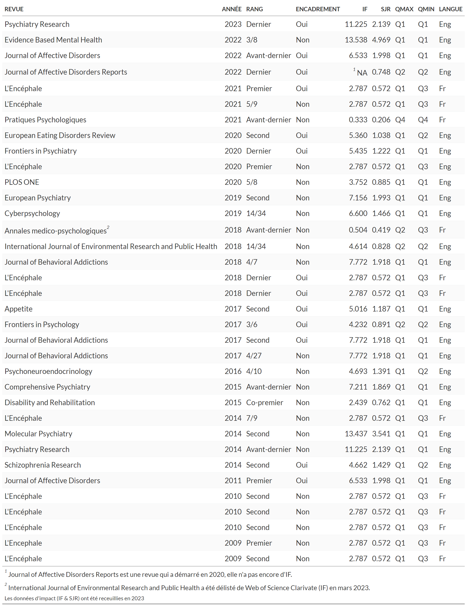
Les 35 publications indexées sont à 66% en langue anglaise avec des rangs utiles pour 71% d’entre elles (57% si l’on ne prend pas en compte le rang d’avant-dernier et 29% si l’on prend en compte uniquement les rangs premier et dernier). Dans 38% des cas, les publications ont impliqué une activité d’encadrement.
L’IF moyen est de 5,2 (écart-type de 3,3) avec un premier quartile à 2,8 et un troisième quartile à 7. Le SJR moyen est quant à lui de 1,3 (écart-type de 1) avec un premier quartile à 0,57 et un troisième quartile à 1,92. Dans le cas le plus favorable, 97% des publications se situent en Q1/Q2 (86% en Q1) tandis que dans le cas le plus défavorable 63% des publications se situent en Q1/Q2 (46% en Q1).
Description
Actuellement1, les indicateurs métriques Scopus me concernant font état de 37 documents (35 publications et 2 corrigedum) dans des revues indexées, de 729 citations (dont 18 auto-citations) par 693 documents et d’un h-index de 13.
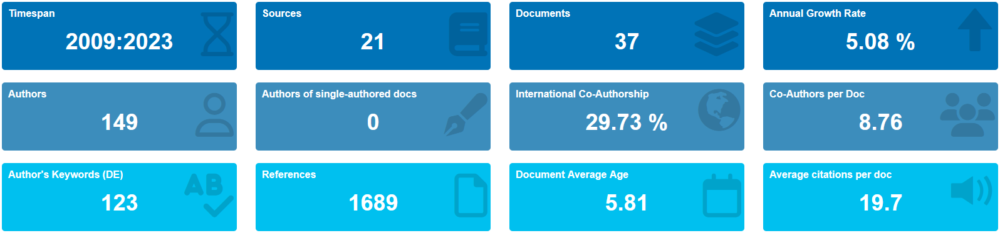
Les publications indexées sont très majoritairement des articles (81%). A noter, les deux corrigedum, concernent :
des corrections pré-publication non prises en compte lors de la publication ;
une erreur sur 2 lignes de code parmi 1 000 lignes de code de préparation des données préalable à l’analyse. Les corrections n’ont pas modifié les conclusions de l’article mais corrigé l’estimation de la prévalence d’un indicateur dans 3 sous-populations. Si les erreurs dans les publications peuvent être mal perçues, voir stigmatisée ; la possibilité de corriger ses erreurs de manière honnête et transparente dans une démarche de science ouverte me parait, au contraire, relever d’un motif de fierté (voir le ?@sec-PerspPub).
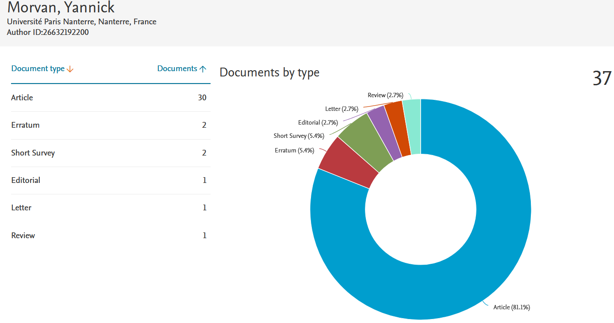
Si 65% des publications dans des revues le sont en langue anglaise, les publications en Français sont principalement dans la revue L’Encéphale2 (qui est le premier support de publication en tant que revue et représente 30% d’entre-elle)
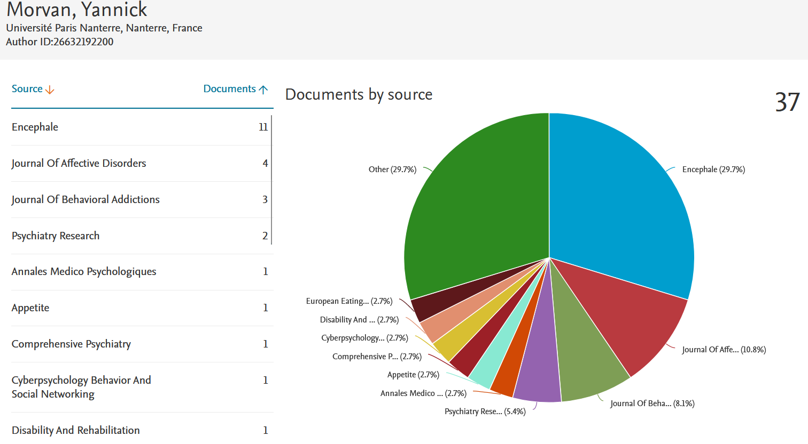
Le rythme des publications depuis 2009 (soit 14 ans) est en moyenne de 2,5 articles par année (sur une base de 35 publications).
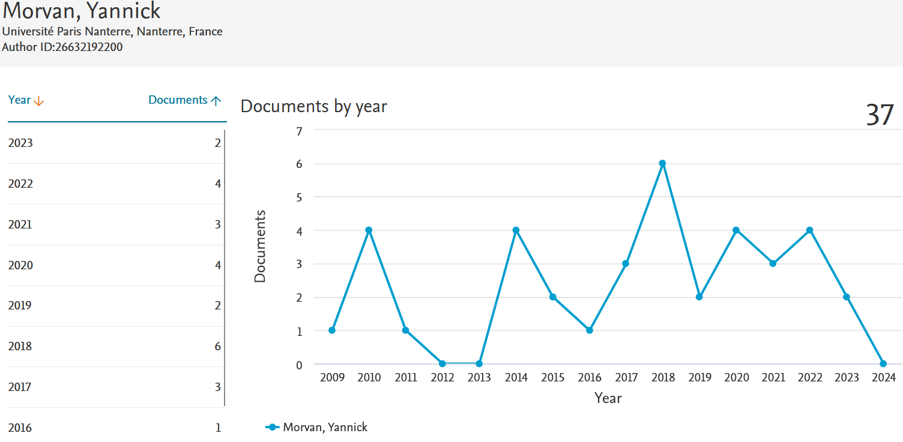
Les principaux co-auteurs sont des chercheurs français avec 5 médecins (spécialisés en psychiatrie, santé publique et génétique dont 2 PUPH, 1 MCU-PH et un CCA)3, 2 psychologues (spécialisées en TCC dont une PU et une Psychologue Hospitalière) et une Professeur d’Activité Physique Adaptée (Maître de Conférences en STAPS et également psychologue).
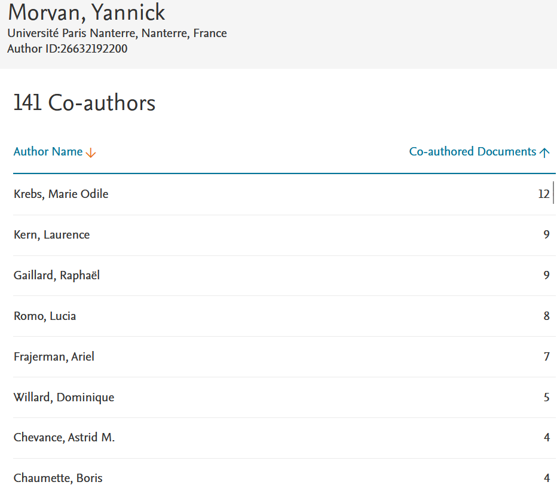
Les mots-clés des articles les plus présents sont dépression, schizophrénie et étudiants.
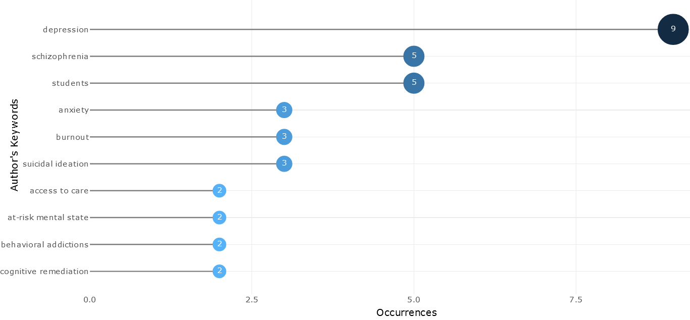
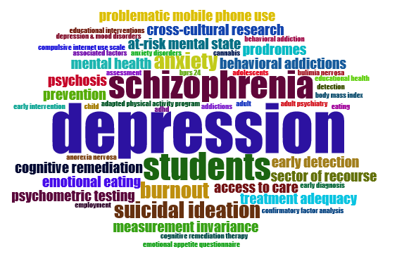
Les co-citations dans les publications avec une détection de communauté (algorithme Walktrap) permettent d’identifier 5 catégories de travaux :
- Les travaux relatifs aux mesures de santé mentale (en vert) ;
- Les travaux également en lien avec les mesures, mais également sur des aspects de recours aux soins et d’adéquation des traitements (en jaune) ;
- Ces deux entités sont en lien avec les travaux relatifs à la détection et à la prévention précoce (en violet) ;
- Un cluster renvoyant aux travaux sur les caractéristiques psychométriques des outils de mesures (en rouge) ;
- Un cluster davantage en rapport avec la prise en charge par remédiation cognitive (en bleu).
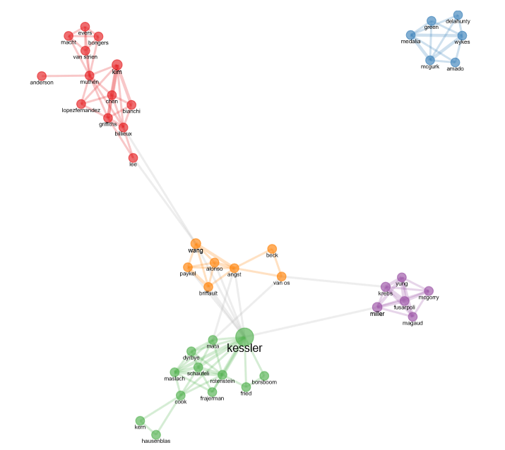
Analyses lexicométriques
Les analyses réalisées à l’aide du logiciel Iramuteq donnent également des indications supplémentaires, car elles sont basées sur l’analyse textuelle des titres et des résumés4 des 35 publications.
Elles éclairent la répartition des publications indexées en identifiant 4 catégories de travaux dont :
plus d’un tiers sur des aspects plus psychométriques (développement de mesures et validation d’échelles),
plus d’un quart sur des questions de prise en charge, mais également sur la réflexion quant aux construits et aux mesures,
et enfin deux classes de fréquences similaires qui renvoient à des aspects de mesures de prévalences d’une part et d’évaluations des prises en charge par remédiation cognitive d’autre part.
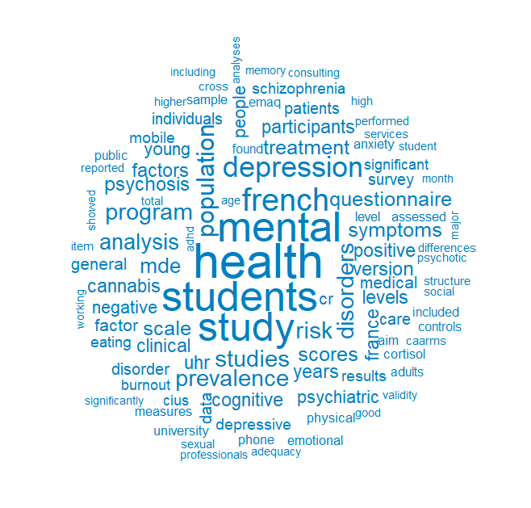
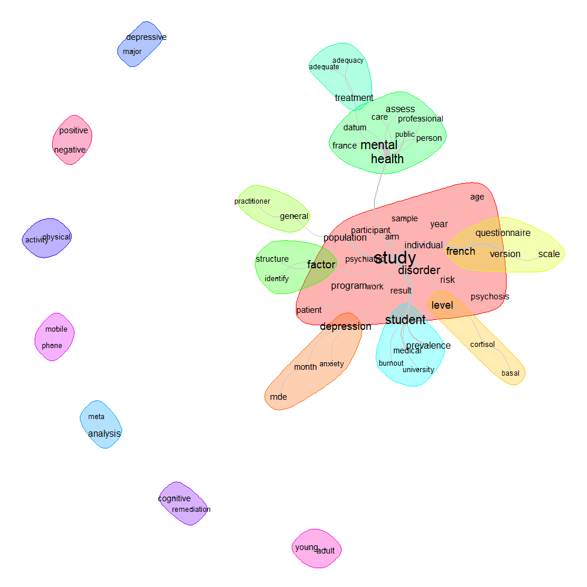
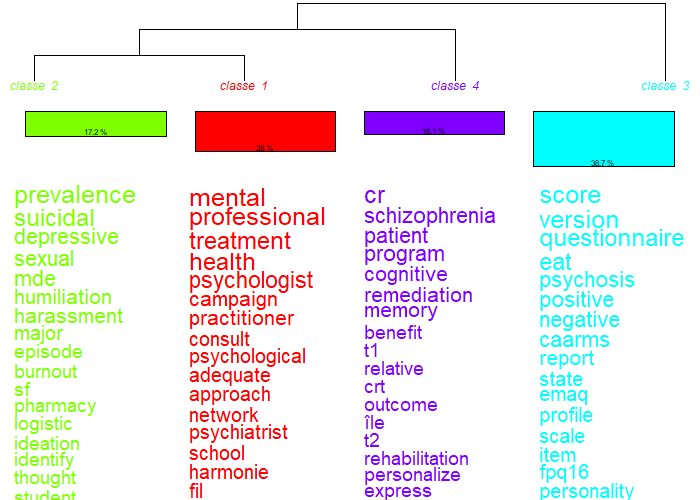
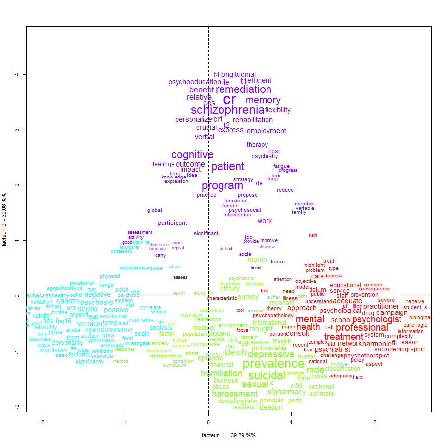
Responsabilités scientifiques
Au sein de GDR CNRS 3557, Institut de Psychiatrie (http://www.institutdepsychiatrie.org), je suis associé à la gouvernance et au pilotage du réseau en tant que secrétaire général adjoint (https://institutdepsychiatrie.org/linstitut/#lagouvernance).J’ai également été co-responsable du groupe bases de données cliniques.
L’institut de Psychiatrie rassemble 26 équipes de recherche du Groupe de Recherche en Psychiatrie (GDR 3557), des équipes cliniques associées, universitaires ou de secteur, ainsi que des entreprises de biotechnologie (https://institutdepsychiatrie.org/wp-content/uploads/2021/02/IDP_PLAQUETTE_2021-3.pdfsommes-nous)
Echanges scientifiques
Co-organisation scientifique avec Laurence Kern de 4 journées de formations à l’université Paris Nanterre en janvier 2016 (formateurs Christophe Lalanne) aux équations structurelles avec R (lavaan) destinées aux chercheurs, enseignants-chercheurs, psychologues, psychiatres, ingénieurs et doctorants. 30 participants provenant de l’UFR de Psychologie, de STAPS et du réseau de l’institut de psychiatrie (GDR CNRS 3557).
Programme :
Introduction à la visualisation des données avec R
Analyse factorielle (EFA & CFA) pour des données continues et catégorielles
SEM et analyses multi-groupes (analyse d’invariance de mesure)
Régression, Médiation, Modération
Co-organisation Scientifique avec Laurence Kern et co-animation (mineure) avec le Dr Arielle Bonneville-Roussy (Formatrice principale, Psychometric Centre Cambridge) d’une formation nationale de 5 jours sur Mplus à l’université Paris Nanterre en juillet 2016.
Programme :
Modelling individual trajectories over time
Group-based trajectories
Multi-level regression
Multi-level mediation and moderation
Multi-level factor analysis and SEM
Collaboration qui mènera à un ouvrage : Bonneville-Roussy, A., Fenouillet, F., Morvan, Y. (2021). Introduction aux analyses par équations structurelles : Applications avec Mplus en psychologie et sciences sociales. Dunod.
Sponsor d’un Professeur invité le Dr. Rafaël PENADES de l’Université de Barcelone en septembre 2017 à l’université de Paris Nanterre. Principales journées d’études organisées dans le cadre de la visite du Dr Penades :
For Master’s degree student: “Psychotherapy from the perspective of neuroimaging: The talk focused on the results from psychotherapy studies in different disorders with neuroimaging procedures.”
For PhD students and researchers: “Neuroimaging in schizophrenia, notes for clinical psychologists : The talk focused on inferring processes and limitations of neuroimaging data in psychology by taking the example of schizophrenia.”
For psychologists and psychiatrists : “From research to clinical practice in psychiatry : what are neuroimaging data offering to cognitive therapists ? : The talk focused on practical insights for cognitive therapist in understanding and treating mental health disorders from neuroimaging literature.”
Financements
Les projets de recherches financés l’ont été principalement en tant que collaborateur soit sur des missions spécifiques soit en tant que responsable ou co-responsable d’une partie du projet. A noter une participation récente à un projet Horizon Europe 2023 en tant que responsable d’un “workpackage SHS”5.
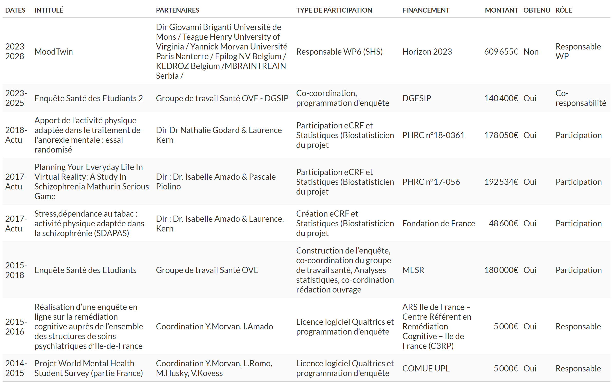